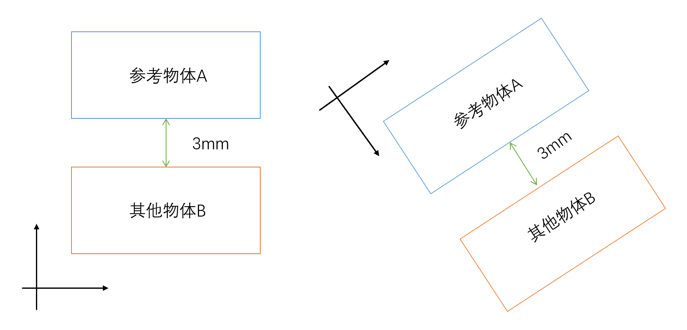

光学设计

Zemax光学系统设计非序列模式
1. 非序列模式
Zemax软件可以使用序列模式和非序列模式两种模式来对光学系统进行设计
两种设计的区别：
序列模式 非序列模式
非序列模式首先要选定参考物体
参考物体，又称Ref Object，该物体定义了非序列全局坐标与局部坐标之间的关系，在实际使用过程中，应先确定参考物体，再确认被参考物体（工作序列中应保证参考物体位于被参考物体序列前），在实际使用可分为绝对参考和相对参考。
绝对参考：在Ref Object参数栏中直接输入要参考的物体的序列编号（编辑器中物体所处的序列号），这样物体就建立了以参考物体为原点的参考坐标系，如图所示：
